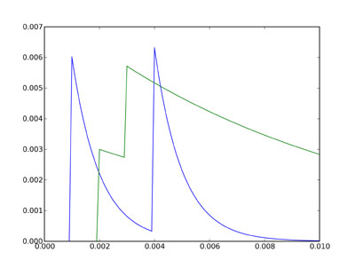

In this first part, we’ll build a network consisting of three neurons. The first two neurons will be under direct control and have no equations defining them, they’ll just produce spikes which will feed into the third neuron. This third neuron has two different state variables, called Va and Vb. The first two neurons will be connected to the third neuron, but a spike arriving at the third neuron will be treated differently according to whether it came from the first or second neuron (which you can consider as meaning that the first two neurons have different types of synapses on to the third neuron).
The program starts as follows.
from brian import * tau_a = 1*ms tau_b = 10*ms Vt = 10*mV Vr = 0*mV
This time, we will have multiple differential equations. We will use the Equations object, although you could equally pass the multi-line string defining the differential equations directly when initialising the Model object (see the next part of the tutorial for an example of this).
eqs = Equations(''' dVa/dt = -Va/tau_a : volt dVb/dt = -Vb/tau_b : volt ''') model = Model(equations=eqs,threshold=Vt,reset=Vr)
So far, we have defined a model neuron with two state variables, Va and Vb, which both decay exponentially towards 0, but with different time constants tau_a and tau_b. This is just so that you can see the difference between them more clearly in the plot later on.
Now we introduce the SpikeGeneratorGroup class. This is a group of neurons without a model, which just produces spikes at the times that you specify. You create a group like this by writing:
G = SpikeGeneratorGroup(N,spiketimes)
where N is the number of neurons in the group, and spiketimes is a list of pairs (i,t) indicating that neuron i should fire at time t. In fact, spiketimes can be any ‘iterable container’ or ‘generator’, but we don’t cover that here (see the detailed documentation for SpikeGeneratorGroup).
In our case, we want to create a group with two neurons, the first of which (neuron 0) fires at times 1 ms and 4 ms, and the second of which (neuron 1) fires at times 2 ms and 3 ms. The list of spiketimes then is:
spiketimes = [(0,1*ms), (0,4*ms), (1,2*ms), (1,3*ms)]
and we create the group as follows:
G1 = SpikeGeneratorGroup(2,spiketimes)
Now we create a second group, with one neuron, according to the model we defined earlier.
G2 = NeuronGroup(N=1,model=model)
In Brian, a Connection from one NeuronGroup to another is defined by writing:
C = Connection(G,H,state)
Here G is the source group, H is the target group, and state is the name of the target state variable. When a neuron i in G fires, Brian finds all the neurons j in H that i in G is connected to, and adds the amount C[i,j] to the specified state variable of neuron j in H. Here C[i,j] is the (i,j)th entry of the connection matrix of C (which is initially all zero).
To start with, we create two connections from the group of two directly controlled neurons to the group of one neuron with the differential equations. The first connection has the target state Va and the second has the target state Vb.
C1 = Connection(G1,G2,'Va') C2 = Connection(G1,G2,'Vb')
So far, this only declares our intention to connect neurons in group G1 to neurons in group G2, because the connection matrix is initially all zeros. Now, with connection C1 we connect neuron 0 in group G1 to neuron 0 in group G2, with weight 3 mV. This means that when neuron 0 in group G1 fires, the state variable Va of the neuron in group G2 will be increased by 6 mV. Then we use connection C2 to connection neuron 1 in group G1 to neuron 0 in group G2, this time with weight 3 mV.
C1[0,0] = 6*mV C2[1,0] = 3*mV
The net effect of this is that when neuron 0 of G1 fires, Va for the neuron in G2 will increase 6 mV, and when neuron 1 of G1 fires, Vb for the neuron in G2 will increase 3 mV.
Now we set up monitors to record the activity of the network, run it and plot it.
Ma = StateMonitor(G2,'Va',record=True) Mb = StateMonitor(G2,'Vb',record=True) run(10*ms) plot(Ma.times,Ma[0]) plot(Mb.times,Mb[0]) show()
The two plots show the state variables Va and Vb for the single neuron in group G2. Va is shown in blue, and Vb in green. According to the differential equations, Va decays much faster than Vb (time constant 1 ms rather than 10 ms), but we have set it up (through the connection strengths) that an incoming spike from neuron 0 of G1 causes a large increase of 6 mV to Va, whereas a spike from neuron 1 of G1 causes a smaller increase of 3 mV to Vb. The value for Va then jumps at times 1 ms and 4 ms, when we defined neuron 0 of G1 to fire, and decays almost back to rest in between. The value for Vb jumps at times 2 ms and 3 ms, and because the times are closer together and the time constant is longer, they add together.
In the next part of this tutorial, we’ll see how to use this system to do something useful.